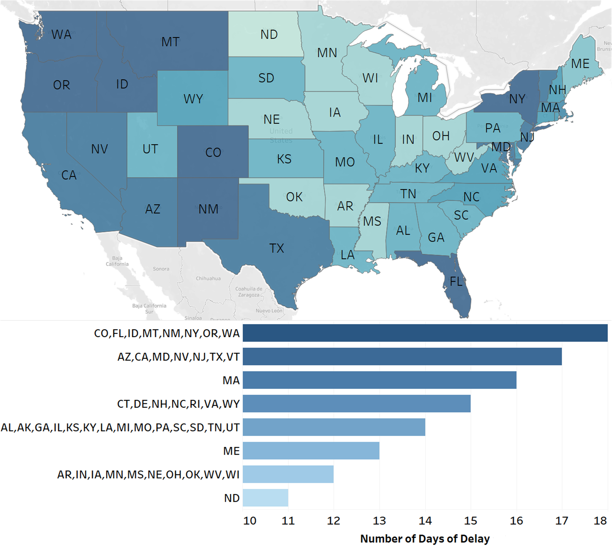

Spatial-temporal Analysis of COVID-19's Impact on Human Mobility: the Case of the United States
Songhe Wang1,*,
Kangda Wei1,*,
Lei Lin2, and
Weizi Li3
1University of North Carolina at Chapel Hill
2University of Rochester
3University of Memphis
*equal contribution

Abstract
COVID-19 has been affecting every aspect of societal life including human mobility since December, 2019. In this paper, we study the impact of COVID-19 on human mobility patterns at the state level within the United States. From the temporal perspective, we find that the change of mobility patterns does not necessarily correlate with government policies and guidelines, but is more related to people's awareness of the pandemic, which is reflected by the search data from Google Trends. Our results show that it takes on average 14 days for the mobility patterns to adjust to the new situation. From the spatial perspective, we conduct a state-level network analysis and clustering using the mobility data from Multiscale Dynamic Human Mobility Flow Dataset. As a result, we find that 1) states in the same cluster have shorter geographical distances; 2) a 14-day delay again is found between the time when the largest number of clusters appears and the peak of Coronavirus-related search queries on Google Trends; and 3) a major reduction in other network flow properties, namely degree, closeness, and betweenness, of all states from the week of March 2 to the week of April 6 (the week of the largest number of clusters).Publication
DOI, The 20th and 21st Joint COTA International Conference of Transportation Professionals, 2021Paper (pdf, 5.2 MB)
BibTeX